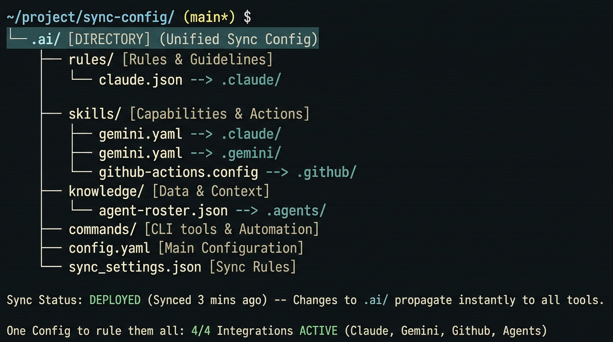

AI coding tools each expect their own config directory. dotai creates a single
.ai/ directory as your source of truth and symlinks everything to where
each tool expects it. Edit one file, every tool stays in sync.

The Problem dotai Solves
Every AI coding assistant expects its configuration in a different file at a different path. You end up maintaining the same instructions in four places.
Supported Tools
dotai supports the major AI coding tools out of the box. Each tool gets its config symlinked from the central .ai/ directory.
AI.md, settings, commands, skills, knowledge
AI.md, settings, commands (.toml), skills, ignore, knowledge
AI.md, AGENTS.md, settings, rules, workflows, skills, knowledge
AI.md, prompts, instructions, skills, knowledge
How It Works
dotai scaffolds a .ai/ directory and creates symlinks from each tool's expected
config location back to the single source of truth. When you edit a file in .ai/,
every linked tool sees the change instantly.
.ai/ directory is committed to git, your tool-specific directories are gitignoreddotai sync to re-evaluate and repair all symlinksdotai doctor to diagnose and auto-fix any issuesdotai status to see the current state of every linkdotai add and dotai removeCLI Reference
From initialization to resource management, dotai provides a full CLI for managing your AI tool configurations.
v3.1.0
Add MCP servers, create skills, define rules, and register slash commands, all auto-synced across every enabled tool.
Add, remove, and list MCP server configurations across all enabled tool settings with a single command.
dotai mcp add my-server -c npx -a "my-pkg,serve,--stdio"Create skill packages with SKILL.md templates. Each skill is automatically linked to every tool's skill directory.
dotai skill add code-review -d "Code review guidelines"Create coding rule files with frontmatter. Set alwaysApply to ensure rules are active in every session.
dotai rule add api-conventions --alwaysCreate slash commands across all enabled tool formats (markdown for Claude, TOML for Gemini) in one step.
dotai cmd add deployAdvanced Features
An 8-phase workflow for spec-traced code generation. From idea to implementation with structured phases, acceptance criteria, and evaluation.
A persistent codebase memory layer at .ai/knowledge/. Your AI agents analyze your codebase and persist findings - architecture, patterns, and gotchas.
Creates INDEX.md, patterns.md, gotchas.md, changelog.md, and the knowledge-scan skill with /learn command for each enabled tool.
Quick Start
One install. One init. All your AI tools stay in sync, forever.